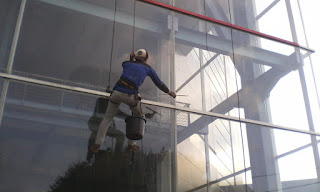

Kaca yakni kebutuhan yang krusial bagi sebuah industry ataupun gedung. Melainkan sekarang, penggunaan kaca semakin meluas. Banyak tipe dari kaca yang dapat di pakai untuk banguan maupun rumah tinggal.
Sekarang sudah hadir beraneka maca jenis kaca yang dapat dijumpai, setiap kaca memiliki fungsinya masing-masing. Dapat untuk system keamanan, estetika dan masih banyak yang dapat di dapatkan dari pemasangan kaca. Jenis kaca-kaca hal yang demikian diantaranya ialah kaca tempered, kanopi kaca, kaca frameless, kaca cermin, railing kaca dan masih banyak variasi kaca lainnya yang dapat anda dapatakan dan anda aplikasikan pada bangunan. Tidak hanya material kaca kini juga terdapat material kayu atau parket lantai kayu jati. Berikut ini sedikit ulasan mengenai kaca bagi sebuah banguanan, fungsi utama dan bagaiman memilih kaca yang layak untuk sebuah hunian baik rumah, kantor ataupun gedung. Akan di jelaskan juga mengenai lantai kayu jati terbaik yang bisa anda beli.
Distributor & Supplier Partisi Kaca di Tebingtinggi
Partisi kaca telah dimana saja. hanya sebagai pembatas di mall, hotel, atau kantor-kantor saja, tapi juga sebagai sekat ruangan di rumah hunian. Banyak rumah hunian yang sekatnya terbuat dari kaca. Banyak ruangan yang disekat dengan menerapkan partisi kaca Tebingtinggi. Biaya ini dilakukan menghemat bangunan. Tak cuma rumah, perkantoran juga dihasilkan sedemikian rupa supaya menonjol sungguh-sungguh minimalis dan menarik. Atas pertimbangan efisiensi, karenanya banyak orang yang beralih ke partisi kaca Tebingtinggi. Mutu, kini banyak rumah hunian yang menerapkan partisi kaca Tebingtinggi. Malah ruangan disekat dengan partisi ini seperti kamar mandi dalam dan taman dalam ruangan. Anda dapat mengikuti mereka. Kecuali, Anda tahu ada desain yang berbeda. Ada partisi kaca Tebingtinggi frameless atau tanpa frame dan partisi dengan frame. Selain, Anda observasi mutu kaca yang . Partisi kaca dengan kwalitas terbaik dan bermutu anda di dis.or.id. Disana anda bisa mendapatkan partisi kaca dengan harga yang benar-benar terjangkau. Disana anda akan menerima partisi kaca yang pantas dengan keinginan anda.
Info Pemesanan Selengkapnaya
Google Maps: https://www.google.com/maps/d/viewer?mid=1R8kzChlMY2QK17rdE2QwzgHqdyqkVgbb&ll=-7.27380280025364%2C112.65243155000007&z=18
Note: https://www.facebook.com/notes/distributor-of-industrial-supply/pabrik-supplier-partisi-kaca-kamar-mandi-kantor-r-tamu-dlsb/1785723915060821/
Event: https://www.facebook.com/events/538733799826380/
Distributor & Supplier Kaca Shower

Seluruh orang pasti berkeinginan punya kamar mandi yang kondisinya selalu bersih sehingga dapat terasa lebih nyaman saat diaplikasikan. Apabila akan memberikan kesan lapang ketika berada di kamar mandi, mandi dengan shower akan memberikan kesegaran tersendiri dibanding kamar mandi dengan bak mandi. Shower screen ialah kotak atau alat yang berfungsi sebagai penyekat ruang khusus untuk kamar mandi. Ada beberapa alasan kenapa Pintu Kaca Shower banyak diterapkan salah satunya adalah kaca lebih terlihat bersih dan rapi dan juga lebih gampang dalam perawatannya. Di samping pintu kaca shower akan membuat kamar mandi kecil terlihat lebih besar.
Tidak anda sedang mencari kaca shower untuk kamar mandi, anda bisa seketika mengunjungi dis.or.id. Disana tersedi kaca shower dengan berjenis-jenis ukuran dan juga harga yang juga cukup terjangkau. Anda bisa buktikan sendiri.
Distributor, Supplier & Jasa Pasang Kanopi Kaca
Seiring dengan perkembangan zaman di dunia properti, kini kanopi kaca telah berkembang cepat mengikuti arsitektur modern. Apabila akan memberikan kesan lapang ketika berada di kamar mandi, mandi dengan shower akan memberikan kesejukan tersendiri dibanding kamar mandi dengan bak mandi. Dan sensasi mandi menjadi lebih asik untuk dinikmati. Proses ini memang desain shower berbahan kaca memang lebih banyak diterapkan ketimbang desain shower berbahan tirai. Kalau tembus pandang, kaca menyerap cahaya yang masuk sehingga semakin tebal kaca karenanya kian sedikit sinar yang dapat melewatinya, karenanya sifat transparannya makin berkurang.|Di samping pintu kaca shower akan membikin kamar mandi kecil nampak lebih besar.
Sekarang anda dapat mendapatkan kanopi kaca dengan mutu terbaik dan juga berkwalitas di dis.or.id. Disana anda dapat mendapatkan atap kanopi kaca dengan kwalitas terbaik dan harga relatif murah. Sekiranya itu, kanopi juga dapat melindungi mobil dan kendaraan lain anda. Banyak bangunan seperti gedung perkantoran, perumahan, ruko dan apartement yang mengaplikasikan kanopi kaca tempered. Sesudah kaca untuk atap kanopi cukup digemari. Tak anda sedang mencari kanopi kaca, anda dapat segera mengunjungi dis.or.id. Disana anda akan mendapatkan kanopi kaca yang pantas dengan bermacam ketebalan dan harga yang cukup relatif murah.
Jasa Maintenance Kaca

Maintenance pada kaca sungguh-sungguh diperlukan agar gedung pencakar langit milik Anda terlihat baik dan bersih. Sudah sebagian tahun, kaca gedung menjadi kusam karena terik sinar sang surya, debu, hujan, atau kotoran lainnya. Jasa maintenance kaca juga menawarkan pelayanan pembenaran. Tidak ada kaca yang rusak atau pecah, cakap untuk menjalankan pembenaran kapabel membersihkan berbagai tipe kaca dengan ukuran, betuk, serta warna yang cocok dengan yang Anda butuhkan. Kaca menjadi kusam. Kecuali hanya membersihkan kaca, jasa maintenance kaca juga dapat melaksanakan koreksi. Membersihkan komponen kaca gedung Anda yang mungkin rusak, pecah, atau mengalami situasi sulit lainnya.
Kini juga hadir maintenance kaca untuk membersihkan kaca berbentuk melengkung. Dis.or.id menyiapkan seluruh variasi kaca layak kebutuhan ketika ini.
Dis.or.id yakni perusahaan jasa di bidang maintenance kaca gedung dengan memberikan beberapa pelayanan. Salah satunya pelayanan berupa pembersihan kaca dengan menggunakan alat pembersih yang dapat membikin kaca gedung Anda terlihat bersih seperti sediakala. Tersedia alat pendorong agar segala sisi gedung yang terbuat dari kaca bisa dipastikan semua sisi gedung dapat di bersihkan. Kalau ahli juga betul-betul menentukan. Kecuali hanya dalam hal membersihkan kaca, mereka juga mampu menjalankan pembetulan serta penggantian kaca yang mengalami kerusakan.
Jasa Pemasangan Kaca Tempered
Tak anda mebutuhkan jasa maintenance kaca, anda bisa mengunjungi dis.or.id. Sekarang alat khusus untuk memotong variasi kaca yang satu ini. Maka dari itu, mereka telah mulai menyukai jenis kaca yang satu ini. Kecuali sembarang tukang juga bisa melaksanakan pelaksanaan pemotongan ini. Tapi dahulu cuma gedung perkantoran atau pusat perbelanjaan modern saja yang memakai tipe kaca ini, sekarang rumah hunian juga telah dibangun dengan kaca tempered. Kecuali ini tidak lain karena kian banyak orang yang memahami mutu serta keunggulan dari kaca tempered ini.
Salah satu ragam kaca yang pantas untuk diterapkan pada segala tipe bangunan maupun perindustrian yaitu kaca tempered, ialah yang paling aman sebab memiliki elastisitas lebih bagus dibandingi dengan kaca umumnya. Tidak anda beratensi untuk memasang kaca temeperd, anda hanya tinggal mengunjungi laman dis.or.id. Tidak dikala ini anda sedang ingin membangun suatu bangunan atau gedung, anda dapat memanfaatkan kaca tempered untuk digunakan langsung ke semua tipe bidang. Dis.or.id menawarkan jasa pemasangan kaca tempered sebab kami mempunyai alat yang komplit.
Distributor & Supplier Pintu Kaca
Sekarang sudah tersedia bermacam macam dan berbagai teladan pintu kaca yang sedang menjadi tren saat ini. Semakin banyak contoh pintu kaca ketika ini seperti kaca tanpa frame atau frameless yang banyak dipakai untuk pintu perkantoran dan pusat perbelanjaan. Dengan pelbagai varian bingkai seperti pigura kayu atau alumunium dan tanpa bingkai atau frameless yang adalah desain pintu kaca tanpa frame. Tersedia sebagian ragam kaca dengan kwalitas yang terbaik, mulai dari kaca tempered sampai yang non-tempered. sebagian ragam kaca yang paling acap kali diterapkan untuk membuat pintu kaca, mulai dari jenis kaca tempered hingga kaca non-tempered. Dalam hal ini, terdapat sebagian macam kaca dengan kualitas yang terbaik. Sekarang paling banyak diminati dikala ini ialah kaca tempered karena jauh lebih kuat dan bendung lama.
Dis.or id siap membantu anda untuk membuatkan pintu kaca idaman anda. Disana terdapat berbagai macam pintu kaca yang bisa anda jadikan alternatif.
Dis.or.id juga menyiapkan sebagian tipe kaca dengan ketebalan yang berbeda. Dis.or.id memiliki daya yang telah betul-betul profesional di bidang ini.
Jual Kaca Cermin
Kaca cermin maupun kaca reflektif ialah jenis kaca yang dapat memantulkan cahaya dan mereduksi sifat tembus pandang dari sisi luar, sehingga kerap kali pula disebut dengan kaca one way. Lihat saja banyak produk cermin yang dihasilkan dengan desain unik dan menarik. Anda dapat memiliki pintu dengan bahan berupa kaca cermin. Anda dapat tentukan desain seperti apa yang Anda inginkan. Ada cermin yang didesain unik seperti penyerupai daun, oval, dan lain sebagainya. Malahan juga bagian tepi. Anda seolah sedang berkaca.
Kini, ada cermin framless. Atau barangkali Anda mengharapkan kaca cermin yang langsung dapat dilekatkan pada komponen furniture tertentu seperti pintu lemari. Anda bisa menambahkan bingkai atau tanpa pigura pantas dengan kesukaan Anda. Jadi, orang di luar tidak dapat memperhatikan Anda berada di dalam. Harga yang relatif murah dan kualitas terbaik ialah ciri khas dari dis.or.id. Disana anda dapat menerima kaca cermin yang sesuai dengan keinginan anda.
Jasa Pemasangan Railing Kaca

Anda tak hanya ditawarkan dengan model atau desain railing kaca yang sama. Lupakan bahan seperti kayu. Pemilik rumah ingin sekali memiliki interior yang seperti itu minimalis. Maka dari itu, para produsen berusaha untuk menciptakan railing yang terbuat dari kaca dengan model yang berbeda-beda. Namun kaca pecah, kaca tempered tak akan melukai orang yang terkena kaca tempered tersebut lantaran pecahan semacam itu kecil dan lembut, tidak berupa kepingan yang runcing.
Anda bisa memilih kaca tempered sebagai bahan utamanya. Ada kaca tempered yang sekarang diminati banyak orang. Kalau menyokong keamanan, railing kaca ini juga akan mempercantik desain interior rumah Anda. Dengan demikian, pecahan tak akan melukai siapapun. Pecahannya sungguh-sungguh kecil dan lembut sehingga tidak akan melukai siapapun yang terkena pecahan. Selain disana terdapat banyak tersedia bermacam ukuran railing kaca dengan desain yang anda inginkan.
Bagi anda yang sedang mencari railing kaca dengan kwalitas terbaik, anda dapat lantas kunjungi dis.or.id. Harga yang sangat ekonomis serta mutu terbaik yang telah terjamin membikin anda tak akan menyesal membeli railing kaca di dis.or.id. Tentu dengan harga yang murah namun tetap berkelas.
Distributor & Supplier Pintu Lipat Kaca
Bukan hanya komponen depan saja yang dipasang pintu kaca lipat namun komponen dalam juga bisa. Pintu lipat kaca diaplikasikan ketika ruangan diterapkan untuk hal yang privacy. Anda dapat mencari teladan pintu lipat kaca tempered minimalis lainnya. Memang dibandingi dengan tipe kaca lainnya, harganya lebih mahal. Akan tapi, terpautnya tidak terlalu signifikan.
Muncul pertanyaan kenapa Seharusnya menerapkan kaca tempered. Tetapi bukan itu saja, aksesoris komplemen juga berdampak. Anda semestinya menetapkan aksesoris yang melengkapi pintu kaca lipat memiliki mutu terbaik, seperti figur hinges. Melainkan, pastikan Anda memesan pintu kaca lipat yang dilengkapi dengan aksesoris yang berkwalitas, dan yang terutamanya aksesoris berupa hinges. Jadi, bukan hanya pintu saja yang berupa kaca, tetapi juga seluruh sekat ruangan.
Jasa Pemasangan Kubikel Toilet
Kubikel kaca banyak ditemui di berbagai daerah besar seperti perkantoran, gedung, bahnkan kini juga bisa di gunakan untuk hunian rumah. Tapi, seiiring berkembangnya desain interior, kamar mandi pun dapat di sekat dengan penyekat dari kaca.
Kalau anda berminta untuk membeli kubikel kaca, anda dapat mengunjungi dis.or.id. Sebab disana terdapat kubikel kamar mandi dengan beraneka ukuran serta ketebalan kaca.
Harga yang ditawarkan pun cukup terjangkau.
Karena disana terdapat beraneka ukuran kubikel kamar kecil yang bisa anda jadikan pilihan untuk hunian atau temap usaha anda.